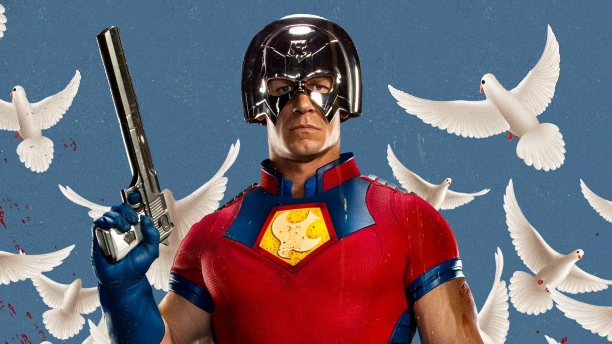

"Trailer da 2ª temporada de Pacificador promete caos absoluto no DCU."
O anti-herói mais politicamente incorreto da DC está de volta! A 2ª temporada de Pacificador acaba de ganhar um novo trailer eletrizante, recheado de ação exagerada, humor ácido e momentos insanos que só John Cena poderia entregar.
A prévia mostra o retorno de personagens queridos, novas ameaças bizarras e, claro, muitas explosões e cenas absurdas ao estilo James Gunn. A série promete continuar o tom irreverente que conquistou o público na 1ª temporada, agora com um orçamento maior e uma trama mais insana.
Destaques do trailer:
- Nova equipe: Pacificador reúne novos aliados em uma missão ainda mais arriscada.
- Vilões surreais: A ameaça da vez parece vir de outro planeta — literalmente.
- Críticas sociais: Piadas ácidas e sátiras políticas continuam em alta.
- Águia de volta: Sim, o companheiro alado do herói está mais útil (e fofo) do que nunca.
“A série mais doida da DC continua elevando o nível da zoeira e da ação desenfreada.” — Maratonando Geek
Com previsão de estreia para novembro de 2025 no Max, a nova temporada promete elevar ainda mais o padrão das produções do novo DCU. Se o trailer for um indicativo do que está por vir, prepare-se para uma temporada imprevisível, ousada e muito divertida.
Você já assistiu ao trailer? Conta pra gente nos comentários o que achou e quais suas teorias para os novos episódios.